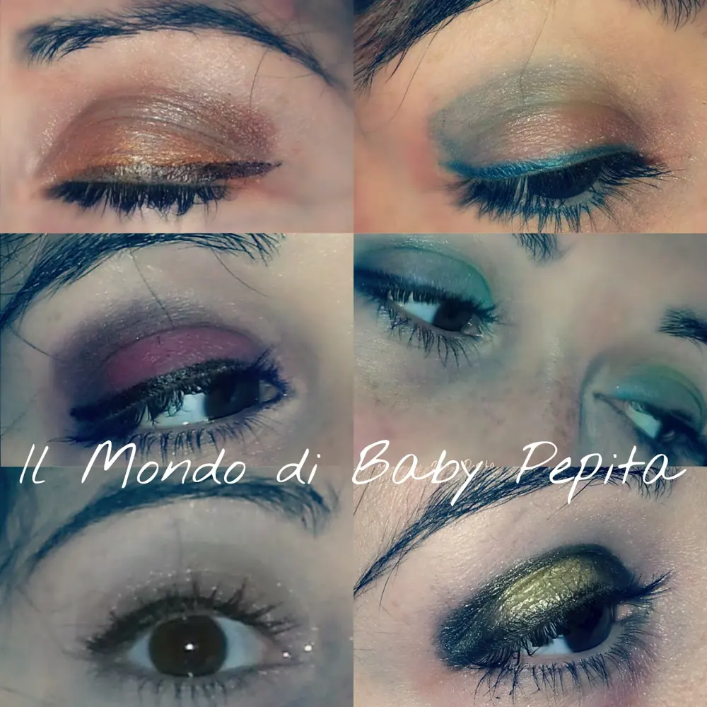
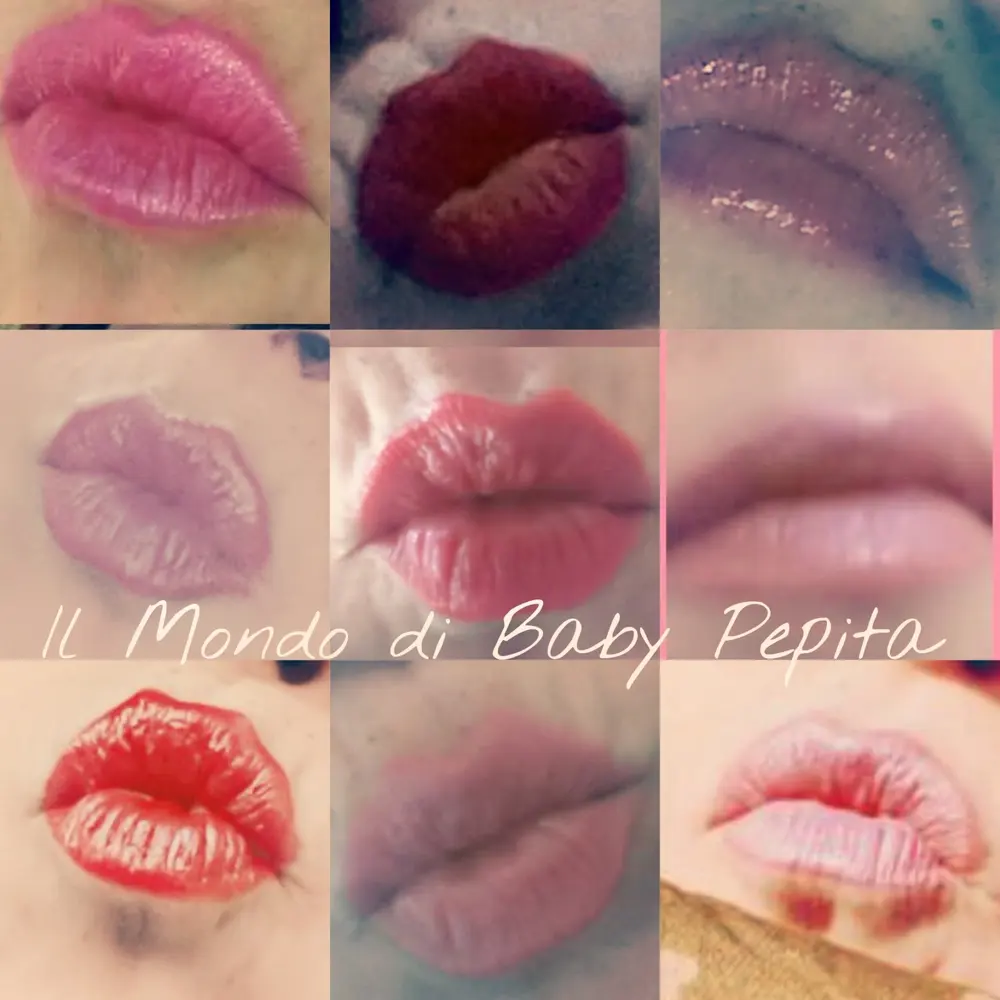

Anno nuovo. . Propositi e auguri
Ciao amoriiiii
Come stanno andando queste feste?
Manca ancora la befana ma tirando le somme dai, tutto bene. .
Regali, abbuffate, auguri e giocate ..
Tutto quello che si fa in questi giorni inizio
Mi rendo conto che sOno stata poco presente e che scrivo il Blog non molto..tutto questo perché ho paura di annoiarvi. .
Ho paura che posso scrivere ed essere retorica. .
Oggi volevo però, anche con ritardo, farvi i miei auguri di un buon anno. .
Fino a quando non passa la befana c'è sempre tempo di augurare un nuovo e spettacolare anno no?
Quest 'anno cercherò di accordare i miei impegni con il blog perché voglio essere presente e parlarvi di tante cose. .
Un pò chiacchiericcio e un pò informativo makeupposo. .
Ve lo prometto ihihih
L'anno 2015 è stato però anch'esso una sorpresa per me. .
Ho iniziato come un gioco qui e sto avendo soddisfazioni personali. .
Non sarò una Blogger affermata, non sarò una che scrive continuamente e che acquista senza sosta per poi recensire. .
Ma sono una di voi, una ragazza semplice che parla e dice la sua su makeup e nail art per condividere la mia passione con chi ama le mie stesse cose. .
Tante sono state le foto che ho fatto. .
Tanti sono i colori che mi hanno accompagnato quest'anno e ho fatto un collage dei miei makeup occhi e labbra, per percorrere insieme un pò quest'anno in pochi scatti. .

Non ho fatto corsi di makeup, e si vede. .
Non ho una mano ferma, e anche questo si vede ihihih
Mi piace sperimentare su di me e cercare di essere il più descrittiva possibile. .
Non sono una MUA ma faccio la MUA per me stessa ihihih
Tutti questi makeup occhi sono stati frutto di fantasia e praticità . . Usando palette personali e molte cose anche grazie ad aziende che mi hanno dato fiducia nel collaborare con loro, testando e dicendo la mia sui loro fantastici prodotti. .

I rossetti, matite, ayelier labbra, sono cose che amo indossare e mostrare. .
Mi piace avere labbra impeccabili e, ripeto, tante aziende che hanno creduto in me, mi hanno dato la loro disponibilità nel provare e io, oggi, voglio ringraziando tutte le aziende che in questo 2015 hanno creduto in me. .
Spero che questo 2016 sarà un anno pieno zeppo di makeup ihihih
Un bacione amori miei ?